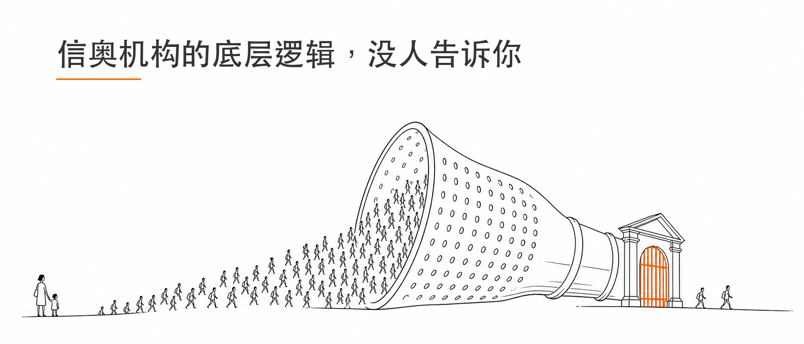
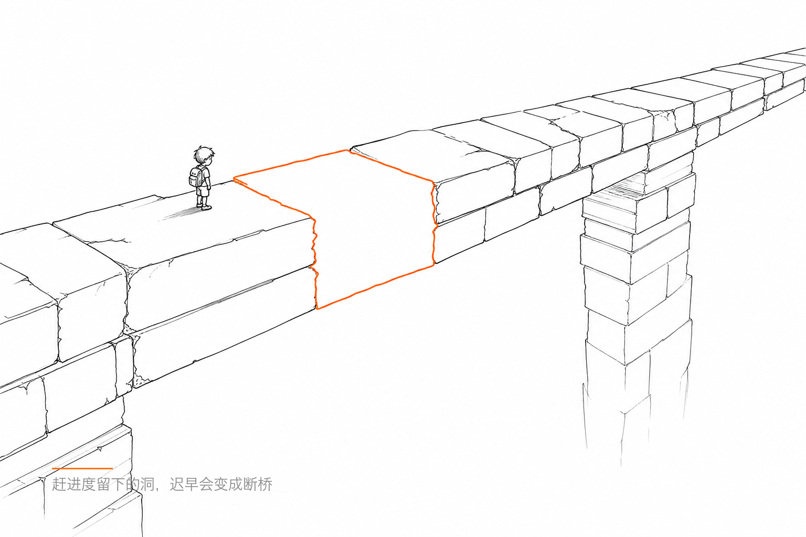
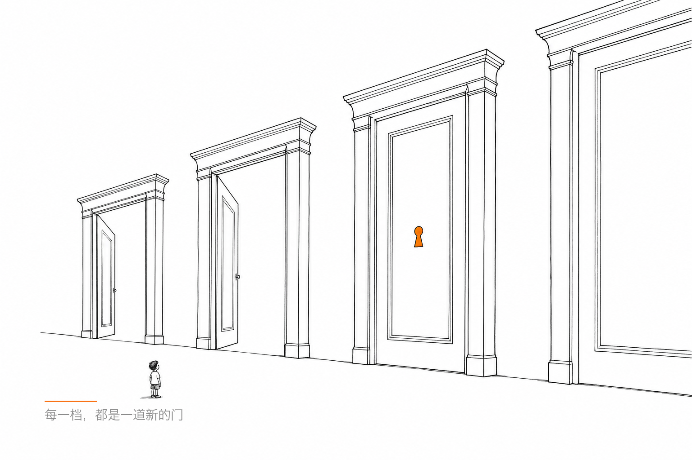

信奥机构的底层逻辑，没人告诉你

上周末我送孩子去上课，顺路和另一个信奥家长聊了挺长时间。
他孩子初二，成绩挺不错的，CSP-S 248分，去年NOIP也拿了不错的成绩。就是那种你问他孩子怎么学的，他能跟你聊一个多小时的家长。
我们聊到了机构的问题。
他说了一句话，我一直在脑子里转。
他说，「你看那些顶级机构，其实很多时候就是把一帮孩子扔进去，然后玩命上难题，跟上来就跟上来，跟不上就挂边。他并不是真的去培养你，他其实是一种筛选。」
我当时就愣了一下。
因为我自己也有这种感觉，但从来没这么清楚地说出来过。
我们聊到了一个他孩子上过的班。
机构吹得很厉害，说这个班的孩子多牛多牛。他后来发现，25年这一届，班里能拿到NOIP一等奖的，其实就两三个。
他当时就觉得，那这个班吹的那些东西，好像也没那么厉害嘛。
但他后来又想了一层，他说他觉得，之所以能从那个班里出这两三个孩子，不是因为机构培养得好，是因为机构有办法把有潜力的孩子聚在一起，然后筛出来。
这是两件事。
把孩子培养好，是教育。
把有天赋的孩子聚在一起筛出来，是运营。
很多家长以为自己买的是前者，其实经历的是后者。
这个逻辑，其实仔细想想到处都是。
你去找那些大型机构，他的课程是怎么安排的？一般就是拼命往前赶进度，难度一轮一轮往上堆，每次作业都出一堆能难住大多数孩子的题。
你孩子如果能跟上，那他就是被筛出来的那一批，机构就有了一个「我出成绩了」的证明。
你孩子如果跟不上，那他可能在这个班里越来越安静，越来越掉队，然后某一天你换了个机构，或者孩子自己放弃了，都不会被统计在这个机构「失败」的那一列里。
这套运作方式，对机构来说是一门挺好的生意。
既有名头，又有成绩，而且能证明来了这里才有的效果。
他朋友家的孩子是这么描述那段体验的，就是每节课的标题里，有一半内容看着学过了，但实际上每节课都有百分之五六十是没真正搞懂的。
这说明之前那些机构讲的，确实是讲过了这些主题，但讲的不细，基础没打扎实。
然后被快速推进的机构把孩子拉着往前跑，跑的过程里，漏洞就积累下来了。
难度到了高级别，漏洞就撑不住了，孩子就感觉突然不会了。
那个「突然不会了」不是孩子的问题，是之前那些没真正消化的东西终于撑不住了。

我自己家孩子也走过这个弯路。
最早报的班，发现不行，没有分层，难度上不去，换掉了。
后来找到一个讲的很细的路子，讲慢但真的扎实，每节课有一半内容孩子觉得「这东西我之前以为会了，但其实没真的会」。
这种感觉其实是对的。就是那种「我以为过了，结果这节课才发现没过」的感觉，恰恰是真正在补漏洞。
但这种路子有一个代价，就是慢。
不像那些机构，进度快，一年能吹出来「我们这里学的省选内容」。
慢慢来讲细一点，时间成本是比较高的。
我跟他聊到了一个他们俩都有感触的事，就是「选拔型机构」和「培养型机构」，到底哪个适合自己的孩子，要看你孩子现在在哪个阶段。
如果孩子的基础很扎实，自驱力也强，那进一个节奏快的高强度班，被筛选一次不一定是坏事，说不定就是那个被筛出来的。
但如果孩子基础还不稳，就进了一个只顾着赶进度的班，大概率是被遗弃在进度后面的那一批。
而且这个事儿特别残忍的地方在于，你很难在报班之前就判断清楚自己的孩子是哪种。机构不会告诉你「我们这是筛选，不是培养」。他们讲的永远是最好的那几个孩子的故事。
我们还聊到了另外一件事，就是学校的支持。
他说他孩子的学校，有一些课可以不去上，有一些作业可以不写，英语比较好可以有一些选择的空间。
这些东西，才是让孩子在竞赛路上能持续投入的隐形资产。
你去比较两个孩子，一个每周在信奥上能投入18到20个小时，另一个只能投入5到8个小时，这两个孩子的成长速度，没有可比性。
而这18到20个小时是怎么来的？不只是孩子努力，是背后整个系统，学校、家长、机构，一起腾出来的空间。
那些顶级机构能出成绩，有一部分原因也是因为他们的学生，普遍来自这种能给孩子留出大量时间的家庭和学校。
你能说这是机构培养出来的吗。。。
他最后说了一句话，我觉得是这次聊天里说得最真实的。
他说，「竞赛路上，真的就得走到那一档，才能知道自己能不能过。S考好，不代表NOIP就能好。NOIP好，不代表省选就上去。每一档都是新的一道门，到那道门口，才能知道孩子有没有钥匙。」
你在门口之前猜来猜去，其实也没什么用。
唯一有用的事，就是确保孩子在到那道门口之前，基础是真的扎的，不是赶进度赶出来的那种。
剩下的，走到那里再说。

以上，既然看到这里了，如果觉得不错，随手点个赞、在看、转发三连吧，如果想第一时间收到推送，也可以给我个星标⭐️～ 谢谢你看我的文章，我们，下次再见。
/ 作者：胖猴懂信奥